Leaves Settings
Leaves
New leave type could be added, by clicking on add button and entering all the details. New leave types, status, accrual, show leave types in home page, partial day, leave notice in advance, secondary approver, tertiary approver etc could be added.
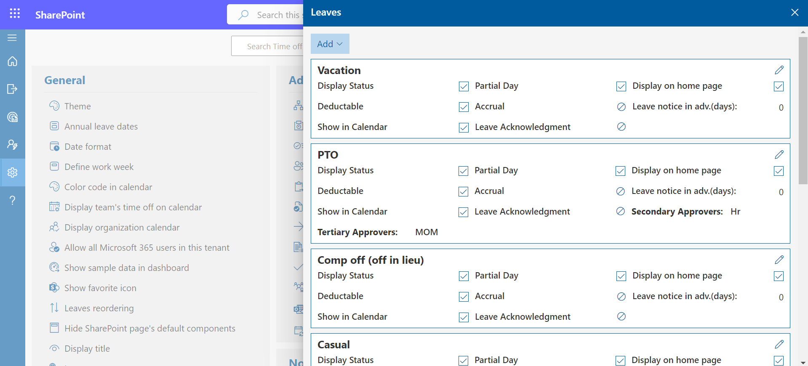Click the Add User button to manually add a new user to the TM365 application.
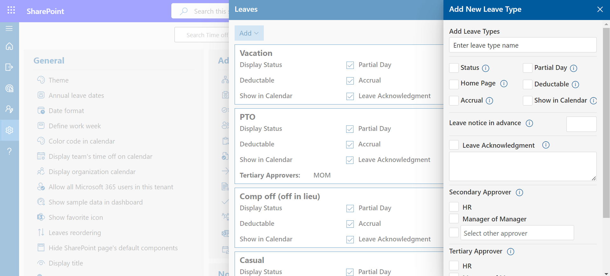
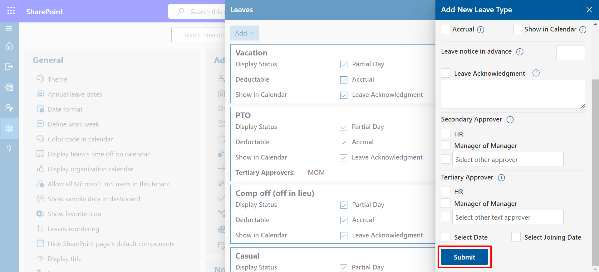
- Status: If it is enabled, it would display in apply leave form and user could apply for their leave.
- Accrual: Leave accrual can be enabled as per the organizations requirement. (In Advance setting accrual leave should be enabled and then select accrual type).
- Homepage: If this is enabled, it would display in home page as Leave Status.
- Deductable: If this is enabled, newly added leave would be deductible from the initial allocated count, in case if it is checked off, this leave will not have any count or maximum limit. Usually, it is being used to provide medical leaves, etc.
- Partial Day: If this is enabled for particular leave, user can be able to apply leave for partial day (0.5 or 0.25 leave).
- Leave Notice in Advance: You can enter the number of days you want the leaves to applied in advance.
- Show in calendar: Show/hide applied leaves on the calendar of apply leave form from the leave settings.
Secondary Approver: You can select HR or manager of manager or any user as seconder approver. Select HR or MoM check box and enable switch. You can type person in people picker box, click on save button and enable switch. If Fist approver (i.e., Manager of user) approve the leave request, request goes to second approver.
- Tertiary approver: You can select HR or manager of manager or any selected email id as tertiary approver.
- Import leaves: Click the Bulk Add button to import multiple users at once using a bulk upload method.
-
Calculate leaves include weekends/holidays
In case you want to include weekends as leaves when first and last day of the leave include weekend / holiday i.e. Someone apply leave from Friday to Monday, if the toggle switch is on, it will calculate four leaves and two leaves in case toggle is in off state.
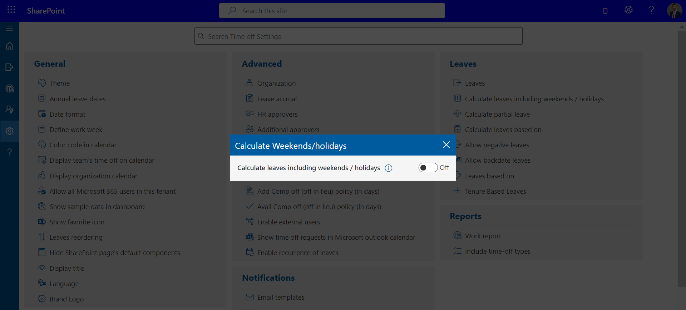 -
Calculate partial leave
Here, you can calculate partial leave (Can select the partial day on either an hourly basis or half/quarter-day from the advanced setting). -
Calculate leaves based on
Here, you can calculate leaves on a daily and hourly basis. You have the option to set the default hours for each day. -
Allow backdate leaves
User can be allowed to submit back date leaves by X days
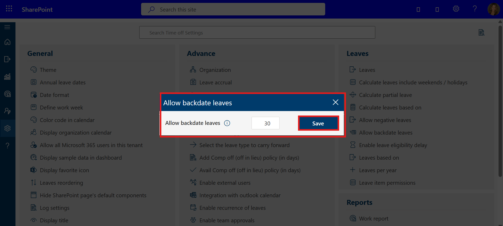
-
Enable Leave Eligibility Delay
Enable this option to assign leave only after a defined number of days from an employee’s joining date. When this toggle is turned on, the system will allow you to specify the number of days after which leave becomes eligible.
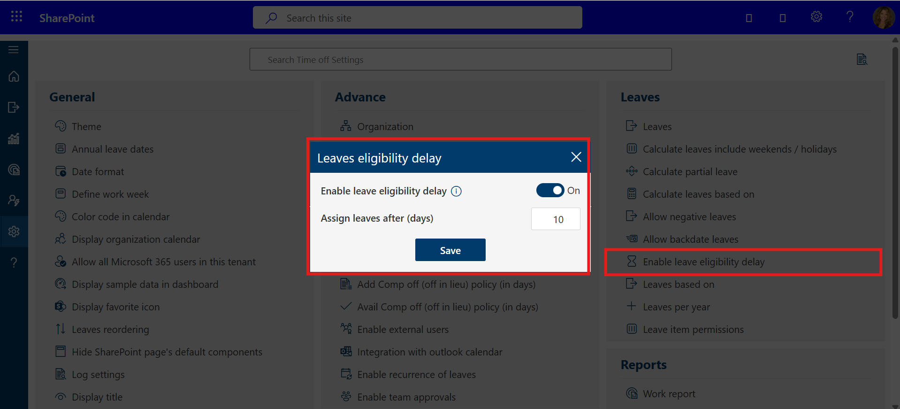 -
Regular: Total number of leaves could be entered. This leave
allocates for all users based on date of joining and accrued (optional). If
you want change leave for particular user, it can we done from user page.
-
Level Based Leaves: Level-based leaves and grades options would be
displayed under systems settings, here first define the grades for different
job title, finally add the leaves numbers for such grades from leave based
option.
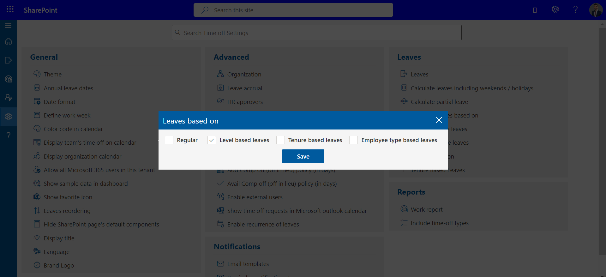
- Tenure Based Leaves:
Second-level approval for leave cancellation would be
available by enabling the tab. HR is the second-level approver for leave
cancellation (On default setting).
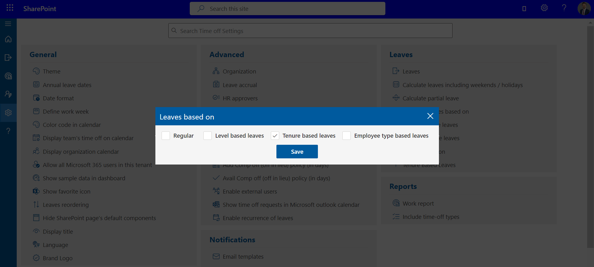
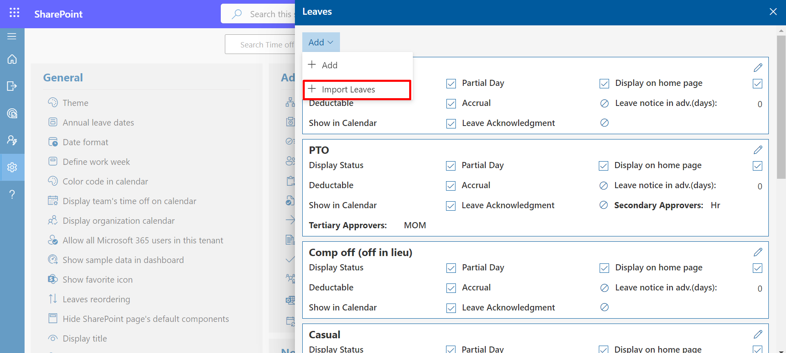
Firstly choose the file to click Choose File button then Click on Upload button to upload the the file
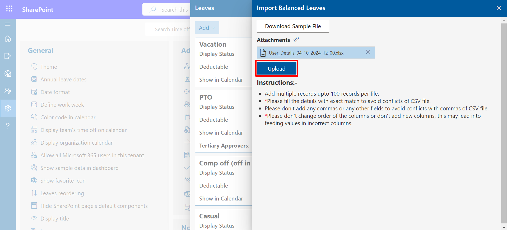
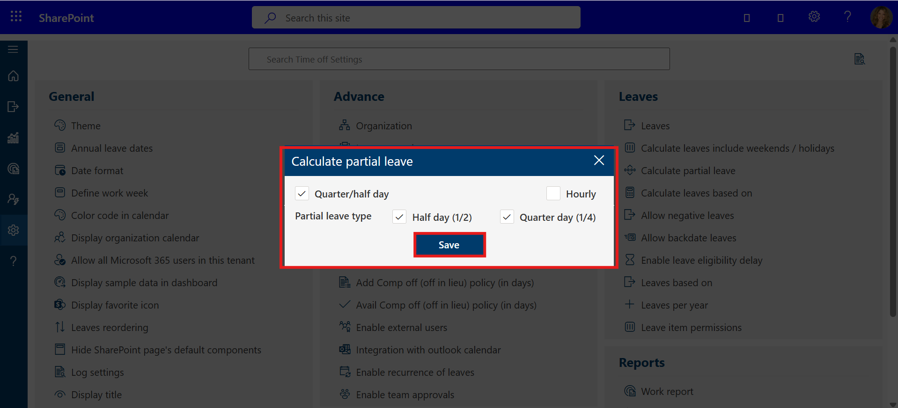
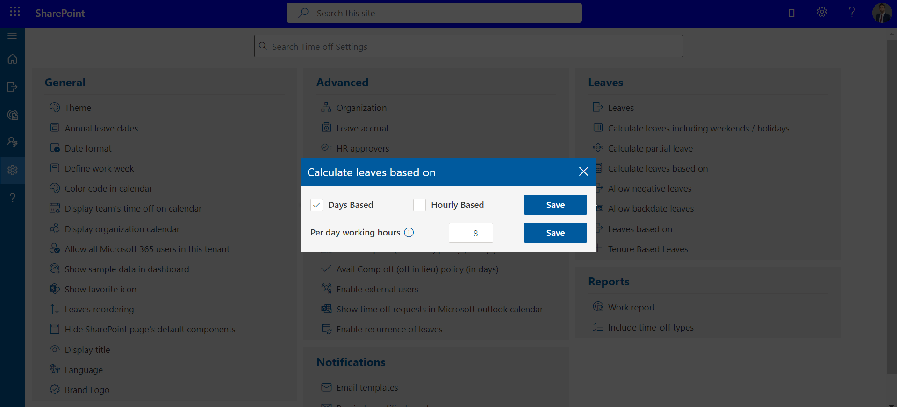